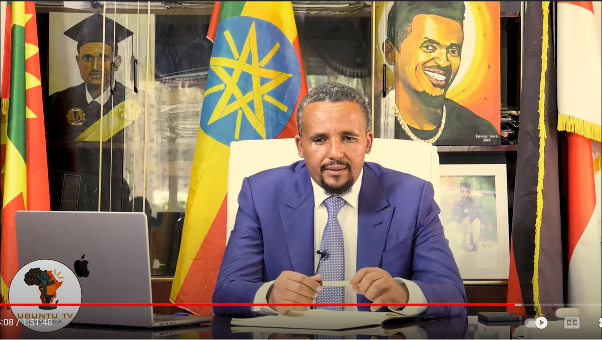
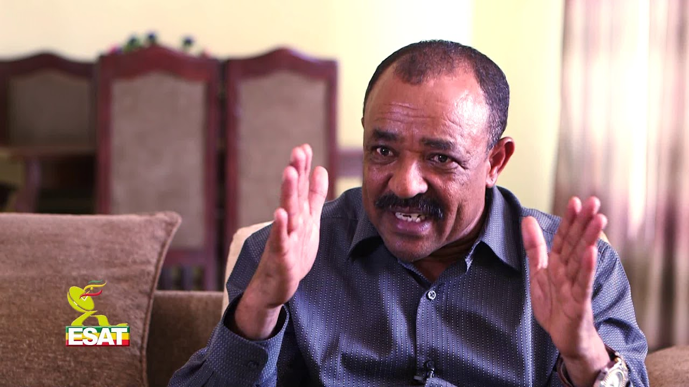

"…አጀንዳህን አትቀይር…!!
በጋዜጣዉ voice|ET News by Dawit Tesfaye
"…የኦፌኮው ምክትል ሊቀ መንበር ሃጂ ጀዋር መሀመድ 30k ተመልካች በነበረው ከአቡንቱ ዩቲዩብ ቻናል ጋር ያደረገውን ቃለ መጠይቅ ደግሜ አየሁት። የጃዋር እርጋታው፣ ጥንቃቄው፣ የድምጽ ቶኑ ዝግታ፣ መወራጨት፣ መጮሁ፣ መሳለቁ፣ ማሳቀቁ፣ ማላገጡ፣ መተንኮስ ማንጓጠጡ ሁሉ ቀርቶ እንዲህ ጭጭት ብሎ ሰውነቱ ትንሽ ከስቶ፣ ፀጉሩም ሸብቶ፣ ለሃገር ሰላም ሁሉም ይጸልይ የሚል ሐዋርያ መስሎ መታየቱን ታዝቤአለሁ። እስር እንዲህ የሚያርቅ ከሆነ እስር ለዘላለም ይኑር። ትንሽ ቢቆይ ደበበ እሸቱን ወይም አንዷለም አራጌን ይሆን ነበር የሚሉም ሰዎች ተደምጠዋል። ፐ እርጋታ…!
"…ከወር በፊት በኦፌኮ በፖለቲካ ድርጅቱ በኩል " ጽንፈኛ" ብሎ የከሰሰውን ፋኖንም በተመለከተ አሁን የሰነዘራቸው መልእክቶች ሰማይና ምድር ሆኖ አግኝቻለሁ። በዚህ አጭር ጊዜ ውስጥ የፋኖ አዛኝ፣ የዐማራን ብሔርተኝነት መጦዝና፣ መመንጠቅ እንደሚያሳስበው ሆኖ መቅረቡም ገርሞኛል።
"…ጃዋር በዚህ ቃለ መጠይቁ የዐማራ ፖለቲካ የማይታመንና ፈጣን የሆን የለውጥ ሁኔታ ውስጥ መግባቱን፣ ብሔርተኝነቱም ፈጣን የሆነ እድገት ማሳየቱን፣ በተለይ የፌደራል መንግሥቱ ከህወሓት ጋር በነበረው ጦርነት ወቅት የዐማራን ድጋፍ መፈለጉን ተከትሎ ዐማራን በሙሉ ወታደር ማድረጉን፣ መሳሪያ ማርክና ታጠቅ ብሎም ሁሉም በአንዳፍ ብሎ መታጠቁን ሳይደብቅ መስክሯል። እንዲህ ካልከው በኋላ መልሰህ በኃይል መሳሪያህን እገፍሃለሁ መባሉ አደጋ መሆኑን በሰከነ መንፈስ ሲናገር ተደምጧል።
"…የፌደራል መንሥቱ ከህወሓት ጋር ሲደራደር ዐማራን በድርድሩ አለመሳተፉ፣ የመገለልና የመገፋት ስሜት መፈጠሩን፣ ለጦርነቱ ሕይወቱን እንዲገብር ጠርተኸው፣ የማረከውን መሳሪያ ለግልህ ውስድ ብለኸው ስታበቃ መልሰህ የድርድሩ ተሳታፊ ሳታደርገው ውሰድ ያልከውንም ትጥቅ በጉልበት ፍታ ማለቱ ከባድ አደጋ እንዳለውም ጃዋር በለሆሳስ ምክር ሲሰጥ ታይቷል።
"…ፋኖ ላይ የሰላ ትችት ማድረግ ይቻላል ይላል ጃዋር። (እሱ በድርጅቱ በኩል ጽንፈኛው ፋኖ ሲል እንደነበረው ማለት ነው) ነገር ግን ፋኖን በማግለልና በማሳደድ አክራሪወች ቢኖሩም እንኳ እደመስሳቸዋለሁ፣ አወድማቸዋለሁ በሚል መንግሥታዊ ጉልበተኛ አስተሳሰብ አይደለም ብሏል። ፋኖነትን ለጊዜው እናስተፍሰው ይሆናል ነገር ግን የፋኖነትን ስሜት ይበልጥ ታሳድገዋለህ እንጂ በዚህ መልኩ ልታሸንፈው አትችልም ነው ያለው ጃዋር። ( ህወሓት ዱላ፣ በትር ሳይቀር በእጁ እንዳይዝ አድርጋ ረግጣ የያዘችውን ዐማራ በዐዋጅ ታጠቅ ካልከው በኋላ ድንገት መጥተህ ፍታ ስትለው አደጋ አለው የሚል ነው የሚመስለው ጃዌ)
"…እርግጥ ነው መንግሥት በፋኖ ላይ የወሰደው አሳፋሪ ተግባር መልሶ እየለበለበው ነው። ከወር በፊት ጽንፈኛው ፋኖ እርምጃ ይወሰድበት እያለ መንግሥትን ሲማጸን፣ ሲገፋ የነበረው ጃዋርስ ምን ዓይነት ራዕይ ታይቶት ነው ይሄ ነገር አደገኛ ነው ይቁም ወደሚል ድንገቴ ሰበካ የወረደው። ፋኖ የገደለው ሰውም፣ የዘረፈውም ባንክ እንደሌለ እየታወቀ ስሙ ሲያጠለሹ ከከረሙ በኋላ አሁን ደርሰው አዛኝ መስለው መከሰታቸው ጥያቄ ይጭራል።
"…እኔ ግን እላለሁ ዐማራ አሁንም በሰበካ፣ በኢትዮጵያ ሱሴ ዲስኩር ለዳግም ንቀት፣ ለዳግም ሞትና ስደት እንዳትዳረግ፣ እንደ ዜጋ እንድትታይ፣ እንድትከበር ፋኖነትህን አጥብቅ። የሰላምን በር አትዝጋ፣ ግን ባዶ እጅህን አይሁን። ሰዎቹ የሚታመኑ አይደሉምና እየተፈራረቁ በተበረጠቁ ቁጥር አጀንዳህን አትቀይር። ጃዋር ግን ሲታይ እንደለማ መገርሳ፣ እንደ ዐቢይ አሕመድ ሲመሽ ካላደፈረሰው በቀር ለአሁኑ ሲታይ እጅግ ያደገ፣ የተረጋጋ፣ እንደ አረጋዊ የሰከነ መስሎ ለመተወን ሞክሯል።
"…የአሜሪካንን ፓስፖርት ከማግኘት 3 ወር ነው የፈጀብኝ፣ የኢትዮጵያ ፓስፖርት ለማግኘት 2 ዓመት እንደፈጀበት የተናገረው ስሰማ ግን የኢትዮጵያዊነትን ክቡርነትና ውድ ማንነት ሲመሰክር ማየቴን አልደብቅም። ኢትዮጵያ የናቋት፣ የሰደቧት፣ የረገሟት፣ ሰድበውም ለሰዳቢ አሳልፈው የሰጧት ኃይሎች በሙሉ እግሯ ላይ ይወድቃሉ።
"…ፋኖም ዐማራም አጀንዳችሁን አትቀይሩ…!!
ከቤታቸው እንደወጡ ያልተመለሱት የብርጋዴር ጄኔራል ተፈራ ማሞ ቤተሰቦች ጭንቀት ውስጥ እንደገቡ ተናገሩ
በጋዜጣዉ voice|ET News by Dawit Tesfaye
ብርጋዴር ተፈራ ማሞ ከትናንት በስቲያ ግንቦት 8 ቀን 2014 ዓ.ም. ረፋድ ላይ ከቤታቸው እንደወጡ ሳይመለሱ መቅረታቸው፣ ከፍተኛ ሥጋትና ጭንቀት እንዳደረባቸው ባለቤታቸው ለሪፖተር ተናገሩ፡፡ ባለቤታቸው ወ/ሮ መነን ኃይሌ እንደገለጹት፣ ባለቤታቸው የሚኖሩት በባህር ዳር ከተማ ነው፡፡ አዲስ አበባ የመጡት ሰሞኑን ሲሆን፣ በሰውነታቸው ውስጥ ያለውን ጥይት (በኢሕአዴግ ዘመነ መንግሥት በውጊያ ላይ እያሉ በሰውነታቸው ውስጥ ገብተው ያልወጡ ጥይቶች)ን በሚመለከት ሐኪም ለማነጋገርና ለመታከም፣ እንዲሁም አዲስ አበባ ዩኒቨርሲቲ የተመደበ ልጃቸውን አስመዝግበው ለመመለስ ነበር፡፡ ብርጋዴር ጄኔራል ተፈራ ሰኞ ግንቦት 8 ቀን 2014 ዓ.ም. ከጠዋቱ 5፡00 ሰዓት አካባቢ አቶ ዮሐንስ ቧያለውን ለማግኘት ከቤታቸው እንደወጡ የተናገሩት ወ/ሮ መነን፣ ‹‹10፡00 ሰዓት አካባቢ ስልክ ብደውልለት ሊያነሳልኝ አልቻለም፤›› ብለዋል፡፡ የባለቤታቸው ስልክ ቢጠራም ሊያነሱ ስላልቻሉ ለአቶ ዮሐንስ መደወላቸውን የተናገሩት ወ/ሮ መነን፣ ከአቶ ዮሐንስ ያገኙት ምላሽ ግን አብረው ቆይተው መለያየታቸውን ብቻ መሆኑን ገልጸዋል፡፡ እስከ ትናንትና ግንቦት 9 ቀን 2014 ዓ.ም. ከንጋቱ 4፡00 ሰዓት ድረስ የባለቤታቸው ስልክ ሲሠራ ቆይቶ እንደተዘጋም አክለዋል፡፡
ኦሮሞ ነጻነት ግንባር (ኦነግ) አመራር የሆነት ኮነሌል ገመቹ አያና ከስር እንዲለቀቁ የፌደራል ጠቅላይ ፍርድ ቤት 3ኛ ሰበር ሰሚ ችሎት ወሰነ
በጋዜጣዉ voice|ET News by Dawit Tesfaye
የኦሮሞ ነጻነት ግንባር (ኦነግ) አመራር የሆነት ኮነሌል ገመቹ አያና ከስር እንዲለቀቁ የፌደራል ጠቅላይ ፍርድ ቤት 3ኛ ሰበር ሰሚ ችሎት ወሰነ። ኮነሌል ገመቹ አያና በግንቦት 9 ቀን 2014 ዓ/ም በተከሰሱበት በሽብር ወንጀል በከፍተኛው ፍርድ ቤት ልደታ ምድብ 3ኛ የፀረሽብርና የህገመንግክት ጉዳዮች ወንጀል ችሎች በነጻ ከተሰናበቱ በኋላ በነጋታው ከቂሊንጦ ማረሚያ ቤት በር ላይ ሲወጡ በኦሮሚያ ፖሊስ ተይዘው ለ6 ወር በገላን ፓሊስ ጣቢያና በወታደራዊ ካንፕ እንዲሁም በአዋሽ መልካሳ በአንድ ጀነራል ዶሮ እርባታ ውስጥ ታስረው እንደነበርና ከህዳር 16 ጀምሮ ደግሞ በፌደራል ፖሊስ በስር ላይ እንደነበሩ ለፍርድ ቤት አስረድተው ነበር። ኮነሌል ገመቹ አያናን በአደራ ከመቀበል ውጪ ምንም የወንጀል የምርመራ መዝገብ እንዳልተከፈተበት የፌደራል ፖሊስ ቀርቦ ማብራሪያ መስጠቱንም ይታወሳል።
ሰበር ሰሚ ችሎቱ የኦሮሚያ ፖሊስ ቀርቦ የኮነሌል ገመቹ የእስራት ሁኔታን እንዲያስረዳ ታዞ የነበረ ሲሆን ትላንት በነበረ ቀጠሮ ችሎት አልቀረበም። ይህን ተከትሎ መርምሮ ትዛዝ ለመስጠት ችሎቱ ለዛሬ በይደረሰ ቀጥሮ የነበረ ሲሆን መርምሮ ኮነሌል ገመቹ አያና ከስር እንዲፈቱ ወስኗል።